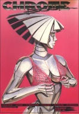

|  | Fiche technique |
| Supplément pour le jeu de rôles Cyberpunk 2020, édité par R. Talsorian Games (1991), diffusé en français par Oriflam | |
| Langue | Français |
| Thème | Matos, mode, armement et équipement |
| Qualité du background | 3 / 5 |
| Qualité des scénarii | - |
| Qualité des règles | 3 / 5 |
| Qualité des illustrations | 2 / 5 |
| Qualité de l'écriture | 2 / 5 |
Voilà le tout premier de la série des Chromebooks. Il s'agit ni plus ni moins que d'un catalogue. Au menu, du matériel électronique, des véhicules, des flingues, des compagnies de service, des puces, de l'immobilier et des logiciels. Une vraie caverne d'Ali Baba, où l'on trouve de tout, de l'original comme du banal, du bon comme du mauvais. En résumé, l'avis sur ce supplément est mitigé : la présentation est décevante (une page pour le vélo-taxi, un comble !) ainsi que la traduction. Malgré cela, il y a de la bonne matière (notamment pour les implants ou le logement), et seul le prix de la VF reste dissuasif.
{kind=link}